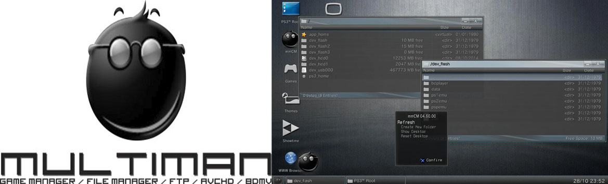
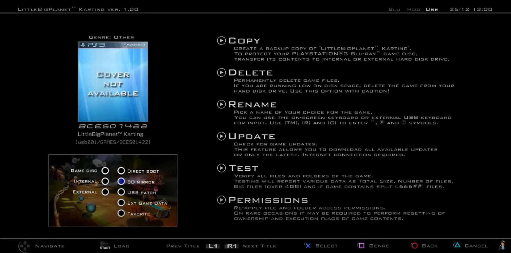

PS3 MultiMAN
Es una aplicación homebrew que funciona como gestor de archivos y cargador de backups (copia de seguridad de juegos de PS3).
Para esta Guia
Requisitos para este tutorial
- USB en formato FAT32
- PC para la transferencia de Archivos por FTP
Programas para este Tutorial
Archivos Para descargar
| Archivos | Servidores | |
|---|---|---|
| multiMAN | Mega | |
| WEB Oficial | psx-place.com | |
- Descargamos los archivos y lo pasamos a nuestra USB en la raíz
- Para instalar el .pkg nos vamos a Administrar archivos PKG
- Seleccionamos Instalar archivos PKG/Directorio estándar (USB)
- Y instalamos el pkg de nuestra aplicación
- multiMAN_04.??.pkg con la última versión disponible
- Una vez instalada nos saldrá en el menú de Juegos
- Abrimos nuestra aplicación
- En la sección de Game podemos cargar nuestros juegos en formato carpeta e ISO
- Si seleccionamos un juego con
 podemos
podemos - Copy (copiar nuestro juego desde HDD de la consola hacia un USB o desde el USB hacia el HDD)
- Delete (podemos eliminar el juego)
- Rename (podemos cambiar el nombre del juego)
- Update actualizar nuestro juego
- Test (verificar los archivos del juego)
- Permissions (le podemos cambiar algunos permisos para configurar el juego) 
- En la sección de Retro
- Podemos cargar juegos de PS1
- En la sección de Favoritos
- Podemos colocar nuestros juegos favoritos para no tener que estar buscándolo en la lista de GAME
- Seleccionamos nuestro juego le damos a y seleccionemos Favorite dentro del menú
- Y nos saldrá en favorito
- En la sección de Video
- En este menú podemos reproducir cualquier formato de video en nuestra consola PS3
- En nuestro USB o HDD
- En la sección de Música
- En este menú podemos reproducir cualquier formato de música en nuestra consola PS3
- En nuestro USB o HDD
- En la sección de Fotos
- En este menú podemos reproducir cualquier formato de Imagen en nuestra consola PS3
- En nuestro USB o HDD
- En la sección de Settings
- Podemos cambiar el lenguaje de la aplicación
- Vamos a Interface Language
- Y seleccionamos el idioma a preferencia ej: español latino
- Y listo
- En la sección de multiMAN
- Actualizar (Update) revisar si hay actualización disponible
- La demás configuración tener mucho cuidado
- Usar el sistema de Archivos del Sistema de PS3
- En la sección de multiMAN
- En el apartado de File Manager / mmOS
- Podemos usar PS3 Root
- Para poder acceder al disco duro externo e interno de la consola
- El disco duro interno es DEV_HDD0 de la consola PS3
- El disco duro Externo es DEV_USB001 para el USB o HDD externo de la consola
- Para salir de damos a icono del escritorio de GAME y listo
- Podemos Usar el FTP
- Para esto solo debemos saber la IP de nuestra consola
- Recomendación la consola PS3 y nuestro equipo deben estar conectado a la misma red para poder conectarse entre si
- Para eso lo vemos en Ajustes/ Ajustes de red
- Y en Ajustes y lista de estado de conexión
- Y en Dirección IP podemos obtener nuestra IP
- iv. Abrimos la aplicación FileZilla Client en nuestro equipo
- Y colocamos nuestra IP de nuestra consola PS3
- Si es necesario colocamos el puerto 21 si manda error al conectar
- Con esta opción podemos pasar archivos a nuestra consola como juegos o aplicaciones para después instalarlas
- Con esto estaríamos listo para poder usar esta aplicación con todas sus funciones
Para Empezar este Tutorial
×